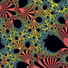

Software
Surfer
Great software to visualize real algebraic surfaces. You can change parameters with sliders in real time, and it even allows you to create animations. The image above my name was created using this program. It is the surface defined by the equation
x(y2+z2)+y(x3+z3)=0.
Fractals
 This image, and the image on the page with Math Talks, are details of the the parameter space of the family of functions b*exp(z) with b varying in the complex numbers. The image is generated based on the dynamics of this family, and because of this, it is infinitely detailed. In other words, you can zoom inside the image forever and it will never loose its detail. You can see more images of this parameter space here, and if you are interested (and know some Spanish!) in reading about the math behind it, you can take a look at this expository article I wrote about it.
Online Math
Wikipedia List of Curves
A nice place to see how pretty, and sometimes how strange-looking, algebraic curves can be.
Imaginary 2008
Web page of Germany's year of Mathematics. Make sure you check out the cinderella gallery and in particular:
Trochoids
This great web page (in Spanish) has excellent java applets that let you play with trochoids. The math content is excellent too.